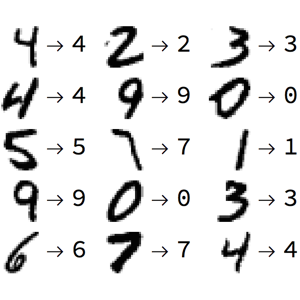
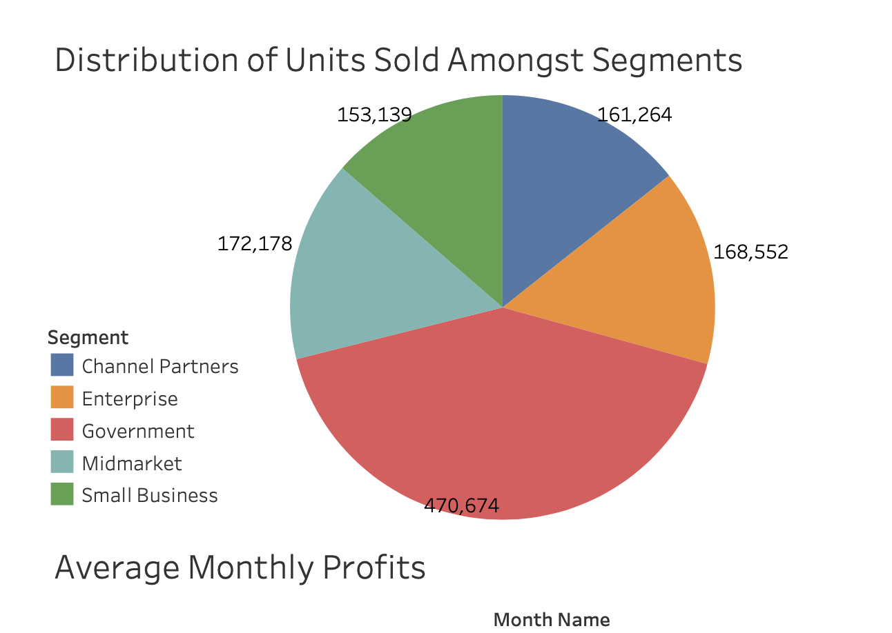

About Me
I am a dedicated Data Science enthusiast currently pursuing a Bachelor
of Arts in Data Science with an emphasis on Human Behavior and
Psychology at the University of California, Berkeley. My academic
journey has provided me with a strong foundation in data analysis,
statistical modeling, and programming languages, such as Python and R.
I am passionate about the potential of data to drive meaningful
insights and solve complex problems. With hands-on project experience
in data analysis and machine learning, and a background in STEM
tutoring and leadership, I am not only equipped with technical skills
but also strong interpersonal and project management abilities. I am
excited to continue my journey in the field of data science,
contributing to innovative solutions, and making a positive impact in
the industry.
Projects
These projects are representative of my own personal interests and have
allowed me to exercise the concepts I have learned throughout my
educational journey. Feel free to take a look!

Digit Recognizer
Implemented a Neural Network to scrutinize handwritten numbers,
predicting displayed digits based on a dataset from a Kaggle
competition. This venture served as my introductory exploration into
computer vision, fueled by a keen interest in the field.
Exo-planet Classification
Employed various clustering techniques to categorize exo-planets by
size and implemented a neural network for classifying planets based on
assigned labels using NASA's exo-planet database. The primary
objective was to enhance proficiency in utilizing diverse clustering
methods to uncover non-obvious trends within the dataset.

Business Product Analysis
Acquired and pre-processed a raw dataset from Kaggle, subsequently
transforming and exporting the cleaned data into a PDF format.
Utilized Tableau to develop an informative dashboard highlighting
crucial insights into the company's products. The project aimed at
honing proficiency in creating Tableau dashboards, a vital skill
within the industry.
National Basketball Association (NBA) Research Project
Collaborated in a team project analyzing NBA census data spanning 2004
to 2022, aiming to uncover noteworthy trends. Executed causal
inference experiments, unveiling an unexpected correlation between
free throw percentages and stadium location.

Digital Asset Analysis
Utilized R for data transformation and Logistic Regression to identify
pivotal user attributes, achieving a 70% accuracy in predicting
product conversion rates. Employed Excel for visualizations, revealing
significant insights into user behavior, while a comprehensive MS
PowerPoint presentation outlined actionable recommendations for
enhancing conversion rates.

Stock Valuation Prediction Model
Implemented a stock valuation prediction model in Python, leveraging
the Google Finance API to retrieve historical market data for publicly
traded companies. Engineered a machine learning model that
demonstrated a 57% accuracy rate in forecasting stock prices.
Significantly improved forecast precision by 10% through the
incorporation of news data, enabling the detection of crucial mergers
and acquisitions.

Customer Sales Segmentation Analysis
Conducted a comprehensive Customer Sales Segmentation Analysis using
Python, SQL, and Excel. Implemented pre-processing, data cleansing,
and labeling techniques on transaction and consumer demographic
datasets. Utilized Excel to visually represent the correlation between
quarterly revenue fluctuations and seasonality in purchasing behavior
spanning from 2017 to 2023. Employed clustering methods to identify
distinct consumer groups, enabling the differentiation of customer
segments based on transaction data.